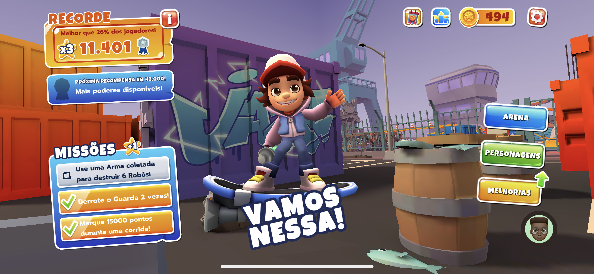
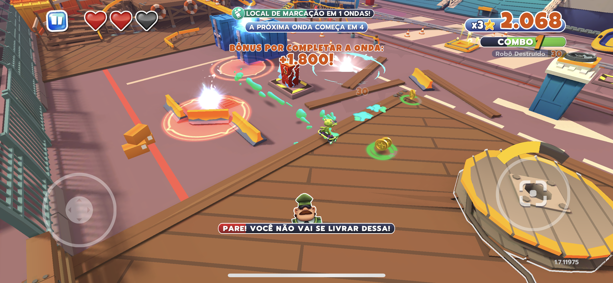
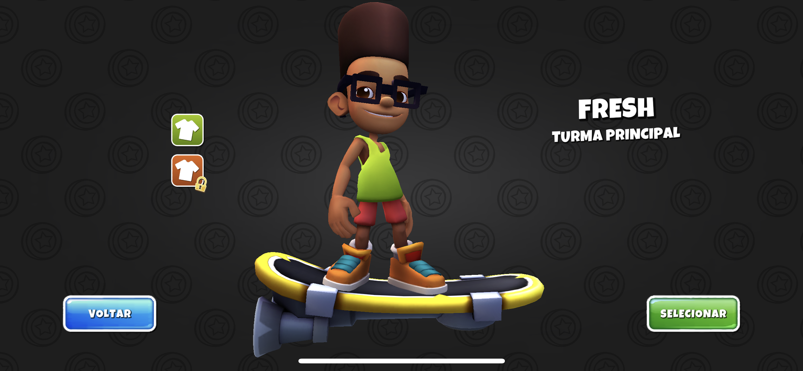
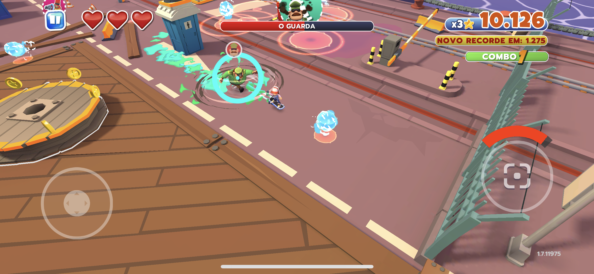

Subway Surfers Tag
Provalvemente você já jogou ou ouviu falar sobre o game mobile Subay Surfers. No qual o objetivo é correr fugindo de um guarda e conforme for passando o tempo a fase ganha mais ritmo e velocidade. Você vai batendo os seus próprios recordes e de seus amigos.
Na Apple Arcade, está disponivel já algum tempo uma nova versão do game: Subway Surfers Tag! Um game com a mesma ideia de correr do guarda, porém você estará o tempo todo sob uma espécie de skate a jato.

Para pontuar no game você precisa vencer os robôs e ir fazendo combos que vão se multiplicando em cada momento que você não interrope uma ação. Não deixe o guarda pegar você e evite ser atingido pelas armadilhas dos robôs no cenário.
Para ajudar você também pode pegar o imã para atrair as moedas que passar por perto, pode sobrear com a mochila a jato e ainda com ela derrotar seus inimigos, aumentar sua velocidade com a famosa estrela que amamos na versão anterior do game, se proteger com um escudo giratório que ao chegar ao fim de sua duração se espalha para atingir aqueles que te perseguem, me pergunto o que aconteceu com aquela bota que usavamos para saltar os trens, eu ainda não vi esse item. 
Os ataques básicos dos personagens são os mesmos, mas cada um tem um ataque especial diferente. Voltando um pouquinho nos skates a jato, você deve prestar atenção para manter suas baterias carregadas. E para isso ao disparar em itens nas fases e ao derrotar inimigos elas podem aparecem e serem coletadas vão recarregando as baterias.
O game tem um visual bem bonito e agradavel, além de ser divertido até nos momentos que você perde por causa das brincadeiras dos personagens jogavéis fazem com o guarda ao serem capturados, mas será porque ele não revida essas brincadeirinhas hein?!

Atualizações no game
O game passou por atualizações e agora se pode mudar de fase ao ir derrotando o guarda que se tornou um tipo de chefe. Os disparos especiais foram substituídos por novas armas coletaveis. Agora para você perder uma partida deve ver zerar o estoque de 3 corações.

Para mim o game ainda pode crescer bastante e combinar cenários com histórias novas e sendo até um game de passar de fase juntando todos os recursos e algumas missões. Deixarei aqui uma breve gameplay.